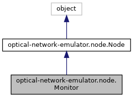

Inheritance diagram for optical-network-emulator.node.Monitor:

Collaboration diagram for optical-network-emulator.node.Monitor:
Public Member Functions | |
| def | __init__ (self, name, component, mode='out') |
| def | modify_mode (self, mode='out') |
| def | get_optical_signals (self) |
| def | get_list_osnr (self) |
| def | get_dict_osnr (self) |
| def | get_list_gosnr (self) |
| def | get_dict_gosnr (self) |
| def | get_ber (self, ber_method=None) |
| def | get_dict_power (self) |
| def | get_power (self, optical_signal) |
| def | get_dict_ase_noise (self) |
| def | get_ase_noise (self, optical_signal) |
| def | get_dict_nli_noise (self) |
| def | get_nli_noise (self, optical_signal) |
| def | get_osnr (self, optical_signal) |
| def | get_gosnr (self, optical_signal) |
| def | __repr__ (self) |
 Public Member Functions inherited from optical-network-emulator.node.Node Public Member Functions inherited from optical-network-emulator.node.Node | |
| def | __init__ (self, name, debugger=True) |
| def | set_output_port (self, dst_node, link, output_port=-1) |
| def | set_input_port (self, src_node, link, input_port=-1) |
| def | include_optical_signal_in (self, optical_signal, power=None, ase_noise=None, nli_noise=None, in_port=0) |
| def | include_optical_signal_out (self, optical_signal, power=None, ase_noise=None, nli_noise=None, out_port=None) |
| def | remove_optical_signal (self, optical_signal) |
| def | remove_signal_from_out_port (self, port_out, optical_signal) |
| def | reset_component (self) |
| def | describe (self) |
Public Attributes | |
| node_id | |
| component | |
| mode | |
| Public Attributes inherited from optical-network-emulator.node.Node | |
| name | |
| debugger | |
| ports_in | |
| port_to_node_in | |
| node_to_port_in | |
| link_to_port_in | |
| ports_out | |
| port_to_node_out | |
| node_to_port_out | |
| port_to_link_out | |
| port_to_optical_signal_in | |
| optical_signal_to_port_in | |
| port_to_optical_signal_out | |
| optical_signal_to_port_out | |
| output_port_base | |
| input_port_base | |
Additional Inherited Members | |
| Static Public Attributes inherited from optical-network-emulator.node.Node | |
| int | input_port_base = 0 |
| int | output_port_base = 0 |
Detailed Description
This implementation of Monitors could be used for ROADMs and Amplifiers.
Constructor & Destructor Documentation
◆ __init__()
| def optical-network-emulator.node.Monitor.__init__ | ( | self, | |
| name, | |||
| component, | |||
mode = 'out' |
|||
| ) |
:param name: name of the monitor. :param component: Node object currently ROADM and Amplifiers. :param mode: The power values to extracted from input or output mode
Member Function Documentation
◆ __repr__()
| def optical-network-emulator.node.Monitor.__repr__ | ( | self | ) |
Human-readable representation
Reimplemented from optical-network-emulator.node.Node.
◆ get_ber()
| def optical-network-emulator.node.Monitor.get_ber | ( | self, | |
ber_method = None |
|||
| ) |
AD: We need to check this function Get's the bit error rate based on gOSNR :return: BitErrorRate at this OPM Calculates Bit Error Rate based on equations from F. Forghieri doi: 10.1109/JLT.1012.2.2189198
◆ get_dict_ase_noise()
| def optical-network-emulator.node.Monitor.get_dict_ase_noise | ( | self | ) |
Get the ASE noise values at this OPM as a dict
◆ get_dict_gosnr()
| def optical-network-emulator.node.Monitor.get_dict_gosnr | ( | self | ) |
Get the gOSNR values at this OPM as a dictionary {optical signal: gOSNR}
◆ get_dict_nli_noise()
| def optical-network-emulator.node.Monitor.get_dict_nli_noise | ( | self | ) |
Get the NLI noise values at this OPM as a dict
◆ get_dict_osnr()
| def optical-network-emulator.node.Monitor.get_dict_osnr | ( | self | ) |
Get the OSNR values at this OPM as a dictionary {optical signal: OSNR}
◆ get_dict_power()
| def optical-network-emulator.node.Monitor.get_dict_power | ( | self | ) |
Get the power values at this OPM as a dict
◆ get_gosnr()
| def optical-network-emulator.node.Monitor.get_gosnr | ( | self, | |
| optical_signal | |||
| ) |
Compute gOSNR levels of the signal :param optical_signal: OpticalSignal object :return: gOSNR (linear)
◆ get_list_gosnr()
| def optical-network-emulator.node.Monitor.get_list_gosnr | ( | self | ) |
Get the gOSNR values at this OPM as a list of tuples (optical signal, gOSNR)
◆ get_list_osnr()
| def optical-network-emulator.node.Monitor.get_list_osnr | ( | self | ) |
Get the OSNR values at this OPM as a list of tuples (optical signal, OSNR)
◆ get_optical_signals()
| def optical-network-emulator.node.Monitor.get_optical_signals | ( | self | ) |
:return power: Returns Optical signals for the required objects
◆ get_osnr()
| def optical-network-emulator.node.Monitor.get_osnr | ( | self, | |
| optical_signal | |||
| ) |
Compute OSNR levels of the signal :param optical_signal: OpticalSignal object :return: OSNR (linear)
◆ modify_mode()
| def optical-network-emulator.node.Monitor.modify_mode | ( | self, | |
mode = 'out' |
|||
| ) |
Change the monitoring interface; options are 'in' and 'out'
The documentation for this class was generated from the following file:
- node.py